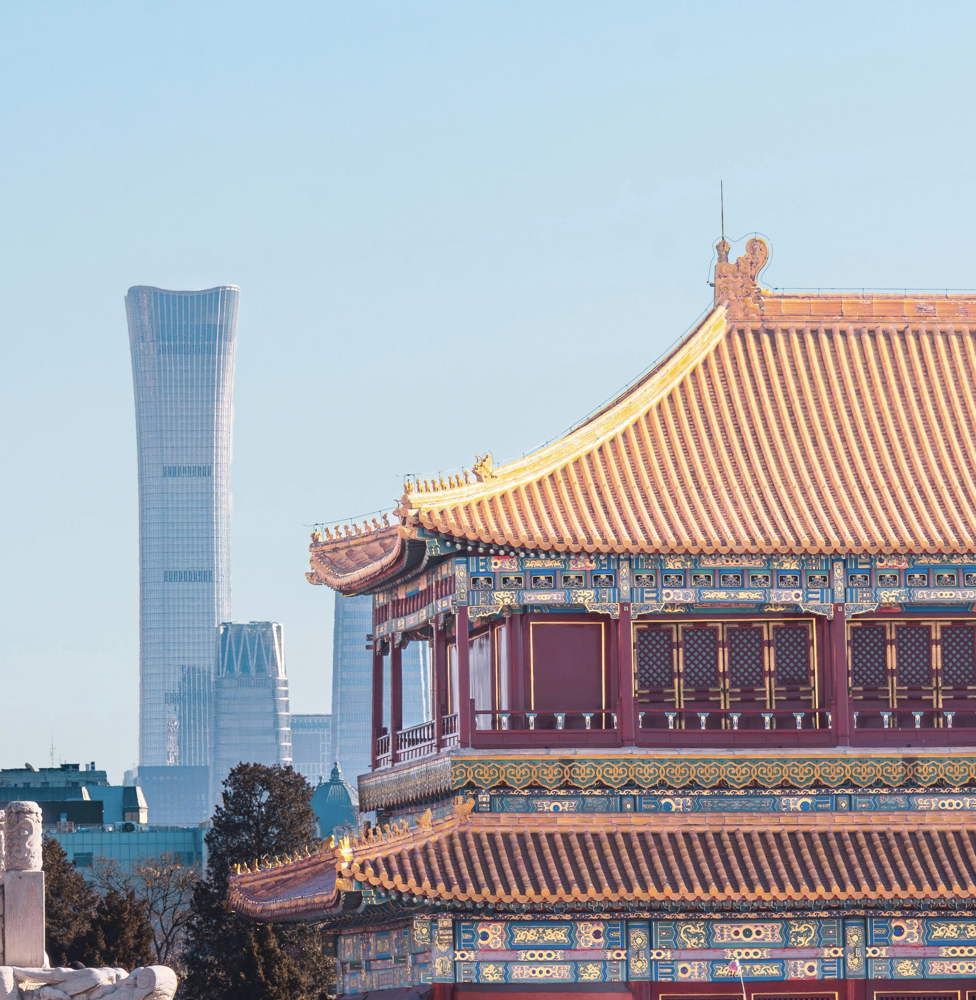

DESTINATION GUIDE

DESTINATION GUIDE
北京是中国的首都与全国文化中心，古都格局和现代都市节奏在此交织。依托首都国际机场、大兴国际机场与发达的铁路网络，这座华北枢纽连接全国，也通达世界。
位于华北平原西北缘，西倚太行、北接燕山，是全国重要的交通与文化中心。
温带季风气候
四季分明，春季干燥多风，夏季炎热多雨，秋季清爽宜人，冬季寒冷干燥。
已有三千余年建城史、八百余年建都史，元大都、明清北京的营建奠定了今日城市格局。
中轴线、胡同与四合院保留着城市肌理；京剧、博物馆与展览空间共同构成传统与现代交汇的日常。
城区跨度较大，建议按区域安排出行；乘坐公共交通时留意高峰时段与安检时间。